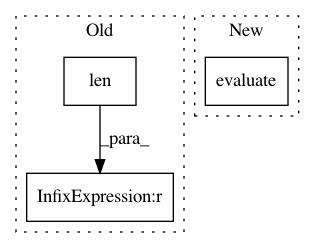

94d3a48e32def7fcc35d13d179acb54aa3c51b05,cscs-checks/cuda/multi_gpu.py,GpuBandwidthCheck,do_sanity_check,#GpuBandwidthCheck#,79
Before Change
r"^\s*([^,]*),\s*Detected devices: %i" % self.num_gpus_per_node,
self.stdout, 1
))
number_of_detected_devices = len(all_detected_devices)
if number_of_detected_devices != self.job.num_tasks:
failures.append("Requested %s nodes, but found %s nodes)" %
(self.job.num_tasks, number_of_detected_devices))
failures.append("nodelist %s" % all_detected_devices)
After Change
self.stdout, 1
))
evaluate(sn.assert_eq(devices_found, good_nodes,
msg="check failed on the following node(s): %s" %
",".join(sorted(devices_found - good_nodes))))
// Sanity is fine, fill in the perf. patterns based on the exact node id
for nodename in devices_found:
for xfer_kind in ("h2d", "d2h", "d2d"):
In pattern: SUPERPATTERN
Frequency: 3
Non-data size: 3
Instances
Project Name: eth-cscs/reframe
Commit Name: 94d3a48e32def7fcc35d13d179acb54aa3c51b05
Time: 2018-12-09
Author: karakasis@cscs.ch
File Name: cscs-checks/cuda/multi_gpu.py
Class Name: GpuBandwidthCheck
Method Name: do_sanity_check
Project Name: cornellius-gp/gpytorch
Commit Name: 38a40828ec688be626e51ebcb1a60a54479fd997
Time: 2017-08-29
Author: ruihan.wu14@gmail.com
File Name: gpytorch/lazy/toeplitz_lazy_variable.py
Class Name: ToeplitzLazyVariable
Method Name: diag
Project Name: qq547276542/Agriculture_KnowledgeGraph
Commit Name: 2facd966a7258e97bdb04431d43a46632c5212ec
Time: 2018-10-25
Author: kjmd2d@sina.cn
File Name: demo/Model/neo_models.py
Class Name: Neo4j
Method Name: findRelationByEntities